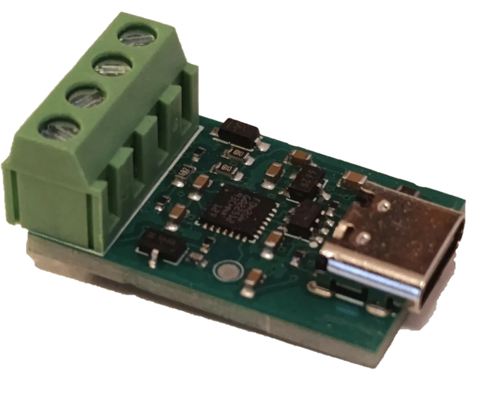
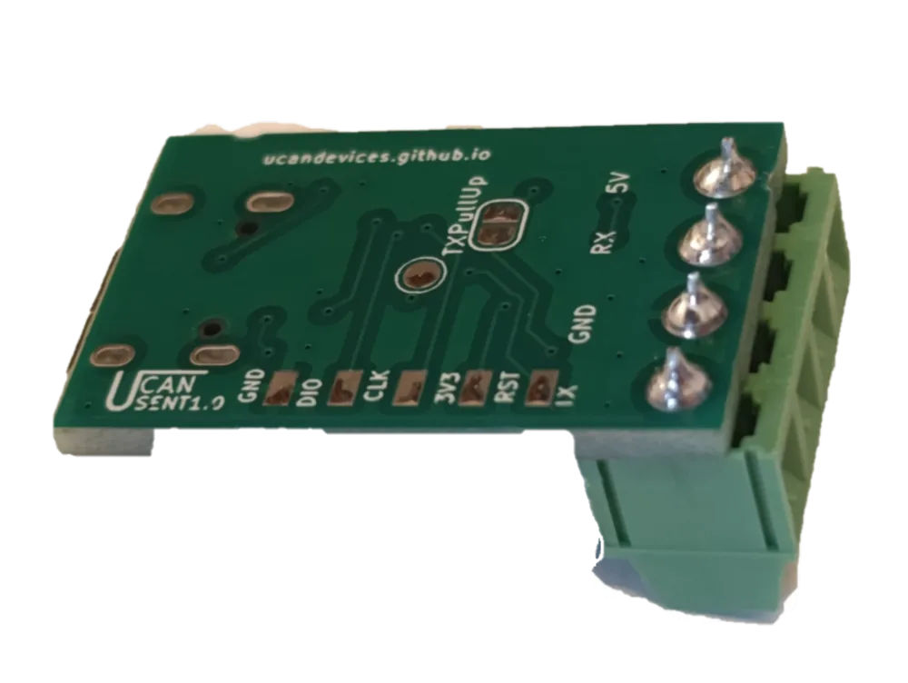
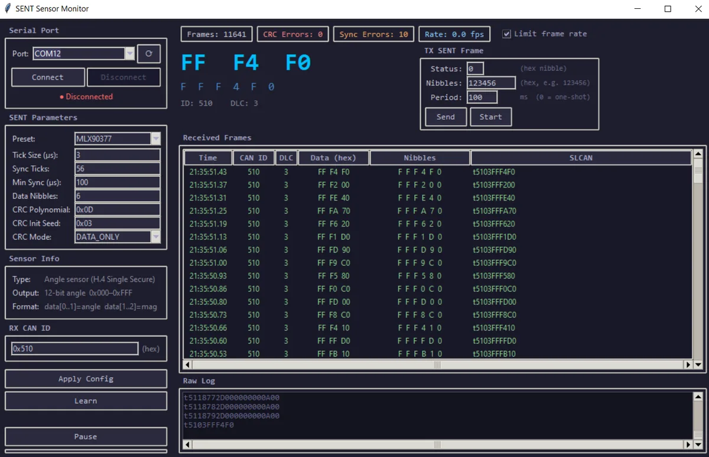
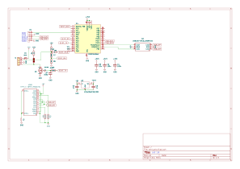

SENT (SAE J2716) USB Converter
Decode automotive SENT sensors over USB. Auto-learn tick and CRC, multiple nibble support, TX mode. Plug-and-play on Windows, Linux and macOS.
Buy on Tindie Buy on Lectronz Source on GitHub
Product and its documentation is supplied on an as-is basis and no warranty as to their suitability for any particular purpose is either made or implied. Producer will not accept any claim for damages howsoever arising as a result of use or failure of this product. This product is not intended for use in any medical appliance, device or system in which the failure of the product might reasonably be expected to result in personal injury.
Description
SENT to USB converter decodes SAE J2716 / ISO 21097 SENT automotive sensor signals and streams them to a PC over a standard USB serial (CDC) port using the SLCAN text protocol. No custom driver is needed — it enumerates as a Virtual COM Port on Windows 10+, Linux and macOS.
- SAE J2716 / ISO 21097 SENT receive and decode
- Auto-detect tick period, nibble count and CRC mode (Learn mode)
- Supports multiple sensors
- Both CRC modes: DATA_ONLY and STATUS_AND_DATA
- CRC seeds 0x03 (SAE APR2016) and 0x05 (legacy/GM)
- TX mode — synthesise and transmit SENT frames
- SLCAN-compatible protocol over USB CDC
- USB-C connector
- No driver required on Linux, macOS, Windows 10+
- Device size is 17x28 mm (without USB connector)
- Open source firmware (STM32F042K6, 48 MHz HSI48)
- USB DFU compatible bootloader for firmware updates
Introduction video
Details
Front and back of the board:


Connections
- Wire the SENT sensor's signal pin to the device's RX pad and connect a common ground; supply the sensor with its required voltage.
- For TX mode (sensor simulation), drive the target ECU from the device's TX pad and a common ground.
- RX pull-up: fitted on the PCB by default — no external pull-up needed.
- TX pull-up: optional, enabled by closing the onboard solder jumper.
For exact pin assignments, timer mapping and firmware internals see the SENTToUSB repository on GitHub.
Getting Started
- Plug the device into a USB port.
- The OS creates a Virtual COM Port (
COM3on Windows,/dev/ttyACM0on Linux). - Open the port at any baud rate — USB CDC ignores baud rate settings.
- Send
O\rto start receiving SENT data.
Viewer
SENT data is supported out of the box with SENT Viewer 1.0

COM port Commands
All commands are plain ASCII terminated with CR (0x0D). On error the device responds with 0x07 (BEL).
| Command | Description |
O | Open channel — starts SENT RX |
L | Listen-only open — same as O |
C | Close channel — stops all activity |
V | Hardware version query → V0101 |
v | Firmware version query → v0101 |
N | Serial number query → N0001 |
t<ID><DLC><DATA> | Send a CAN frame (config / control / TX data) |
Key CAN Frame IDs
| ID | Direction | Purpose | Payload bytes | ||||||||||||
|---|---|---|---|---|---|---|---|---|---|---|---|---|---|---|---|
0x001 |
Host → Device | Configuration (DLC up to 6) |
|
||||||||||||
0x600 |
Host → Device | Control (DLC 1) |
|
||||||||||||
0x520 |
Host → Device | TX frame data (TX mode only, DLC ≥ 5) | B0 = status nibble | B1–B4 = data nibbles packed big-endian | B5–B6 = pause ticks LE (optional) | ||||||||||||
configured ID |
Device → Host | Decoded SENT RX frame (default 0x510, set via B5–B6 of 0x001) |
Each SENT data nibble is 4 bits (values 0–15). Two nibbles are packed into one byte:
the first nibble goes into the upper 4 bits, the second into the lower 4 bits. Example — 6-nibble sensor, nibbles [A, 5, 3, C, 7, F]:Byte 0 = 0xA5 Byte 1 = 0x3C Byte 2 = 0x7F → DLC = 3To unpack: nibble[0] = byte[0] >> 4, nibble[1] = byte[0] & 0x0F, and so on.
|
||||||||||||
0x601 |
Device → Host | Learn result (DLC 4) — sent once when learn mode locks |
|
Minimal session example
→ O\r open channel / start RX with default config ← \r ACK → t001706000305050510\r configure: 6 nibbles, DATA_ONLY, seed=0x03, ← z\r tick 2.5–5 µs, output CAN ID=0x510 ← t5103AABBCC\r decoded SENT frame (repeats ~100–1000×/s) ← t5103DDEEFF\r → C\r stop ← \r
Learn mode
→ t600104\r start auto-detect ← z\r ← t60104...\r result: learned tick, nibbles, CRC mode
Sensor Presets
| Sensor | Tick | Nibbles | CRC mode | CRC seed |
|---|---|---|---|---|
| MLX90377 (angle) | 3 µs | 6 | DATA_ONLY | 0x03 |
| 04L 906 051 L (VW/Audi DPF) | ~3 µs | 6 | STATUS_AND_DATA | 0x05 |
| GM 12643955 (MAP sensor) | ~3 µs | 6 | DATA_ONLY | 0x05 |
FAQ
- What is SENT (SAE J2716)?
- SENT (Single Edge Nibble Transmission) is the SAE J2716 / ISO 21097 single-wire digital protocol used by many modern automotive sensors — pressure, position, throttle, MAP and angle — to transmit data to an ECU. Each frame is a stream of 4-bit nibbles separated by falling edges, with a status nibble, data nibbles and a CRC.
- What is the cheapest USB SENT analyzer?
- The uCanDevices SENT USB Converter is an open-source SAE J2716 / ISO 21097 dongle around $23. It enumerates as a USB CDC virtual COM port on Windows 10+, Linux and macOS with no proprietary driver, and decodes multiple nibble SENT sensors with both DATA_ONLY and STATUS_AND_DATA CRC modes.
- Can it auto-detect SENT tick period and CRC mode?
- Yes. Send
t600104to enter Learn mode. The device auto-detects tick period (0.1 µs units), nibble count (4, 6 or 8) and CRC mode, then replies once with a0x601result frame. SendOafterwards to resume RX with the learned configuration. - Can it transmit SENT frames to simulate a sensor?
- Yes. Start TX mode with
t600102, then send frame data as0x520CAN frames (B0 = status nibble, B1–B4 = data nibbles packed big-endian, B5–B6 = optional pause ticks). - Which sensors are known to work?
- Confirmed: MLX90377 angle sensor, VW/Audi 04L 906 051 L DPF sensor, GM 12643955 MAP sensor. For other sensors, use Learn mode.
- Is the firmware open source?
- Yes — STM32F042K6 firmware on github.com/ucandevices/SENTToUSB. A USB DFU bootloader is included. SENT Viewer 1.0 is a free GUI.
Hardware
The device uses an STM32F042K6 microcontroller running at 48 MHz from the internal HSI48 oscillator — no external crystal required. PCB is designed in KiCad. Board size is 17×28 mm. All hardware source files are available in the SENTToUSB GitHub repository.

Software
Firmware is written in C using STM32CubeIDE (free) on top of the STM32 HAL USB CDC driver, with custom SENT capture and DMA-driven transmit logic. All sources and firmware releases are on the SENTToUSB GitHub repository. For exact pin assignments, timer mapping and firmware internals see the repository README.
Uploading new firmware
The device has an embedded USB DFU bootloader. Use dfu-util to flash new firmware:
dfu-util -a 0 -s 0x08000000 -D firmware.binOn Windows you can also use ST DfuSe tool.
Python Viewer — sent_viewer.py
A GUI application for monitoring SENT sensor data in real time.
Requires Python 3.10+ and pyserial:
pip install pyserial python sent_viewer.py
Features:
- Live frame display — last raw bytes and unpacked nibbles
- Frame table with timestamp, CAN ID, DLC and nibble values
- Frame counter, CRC error counter and frame rate
- Raw SLCAN log with colour coding
- Sensor presets (MLX90377, VW DPF, GM MAP)
- Pause and Clear controls
- Automatic
O\r/C\ron connect / disconnect
Serial terminal
Any serial terminal (PuTTY, Tera Term, screen, minicom) can be used at any baud rate (8N1).
All commands are described in the About section.
python-can
The SLCAN-compatible protocol means the device works directly with python-can using the slcan interface:
import can
bus = can.interface.Bus(bustype='slcan', channel='COM3', bitrate=500000)
for msg in bus:
print(msg)